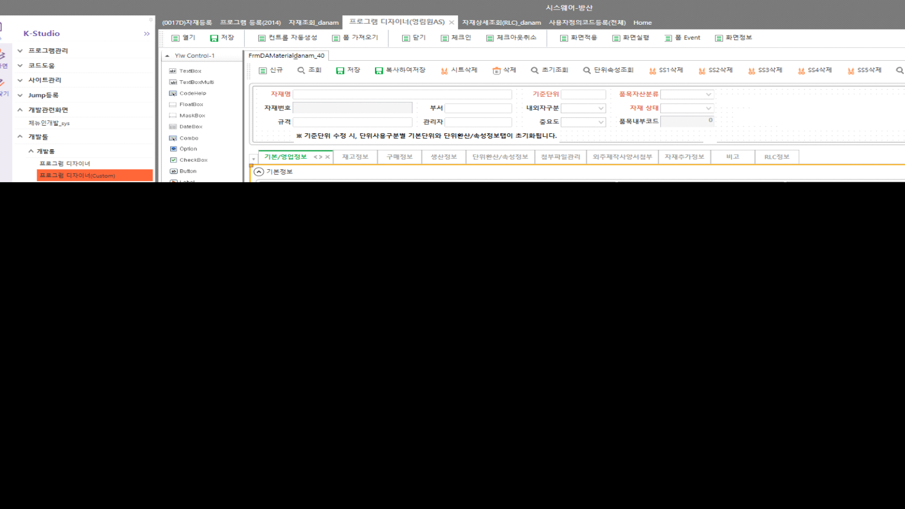
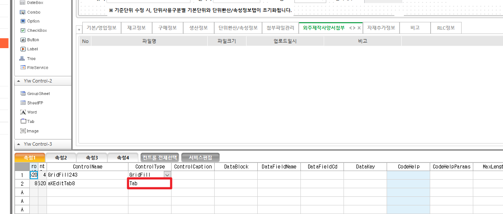

탭 숨김 처리
TabItem576.Visibility = IsVisibility(true)
ControlType 이 Grid 인걸로 해야 해당 탭만 숨김처리 된다
Tab으로 하면 Tab 전부 숨김처리된다


TabItem576.Visibility = IsVisibility(true)
ControlType 이 Grid 인걸로 해야 해당 탭만 숨김처리 된다
Tab으로 하면 Tab 전부 숨김처리된다

